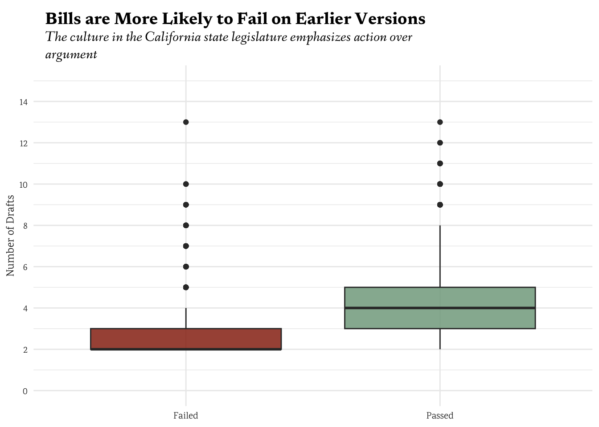
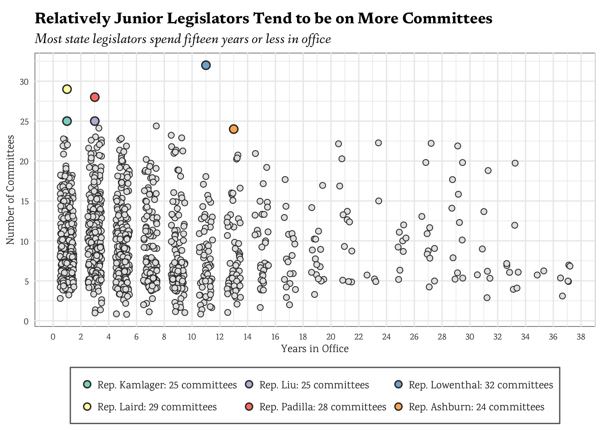

Decoding the California Legislature: Data Exploration
Introduction
The California state legislature is the primary policymaking body in the state, yet the dynamics that shape legislative success and failure are often difficult to observe at scale. This analysis uses legislative data from the California Research Bureau (CRB) to examine the forces influencing legislative outcomes—tracking patterns in bill passage, legislative influence, and the impact of election cycles on lawmaking. Initially, this project focused on a narrower set of questions, focused primarily on campaign finance patterns. However, while the initial findings on donations were descriptive, they lacked actionable insights relevant to policy analysis. The revised research questions instead align more closely with the CRB’s role: understanding how legislative behavior operates within the institutional framework of the state government. This shift allows the findings to be more relevant for decision-makers, researchers, and the public.
The California state legislature is the primary policymaking body in the state, yet the dynamics that shape legislative success and failure are often difficult to observe at scale. While the legislative process follows formal procedures, individual bills experience vastly different fates—some move swiftly through the chambers, while others stall or disappear entirely. This analysis seeks to uncover patterns within the legislative process, identifying what factors contribute to a bill’s success or failure and how political incentives shape lawmaking. Initially, this research focused on campaign finance trends and their influence on legislative outcomes. However, these findings, while descriptive, did not yield actionable insights relevant to understanding legislative behavior. The refined research questions are now directly aligned with the structure and operations of the legislature, making them more relevant to researchers, policymakers, and the general public.
Background: How the Legislative Process Works
A bill in California can be introduced in either the Senate or the Assembly. It must pass through relevant policy committees, and if it has fiscal implications, it must go through the Appropriations Committee. The bill then moves to the chamber’s floor for a vote. If approved, it proceeds to the second chamber, where the process repeats. Once both chambers approve the bill, it goes to the Governor for signature or veto. A veto can be overridden with a two-thirds vote in both chambers. Understanding this process is crucial in interpreting legislative activity trends. Housing CA, Public Interest Group
Data Overview
The datasets used in this analysis are: Bills Dataset: Contains records of proposed legislation at each stage, including authorship, actions taken, committee assignments (hearings), bill status (failed, passed, amended, etc.), dates actions were taken, and the chamber in which the bill was introduced. Committee Dataset: Tracks legislators, their committee memberships and leadership positions, and their legislative tenures.
A key consideration in this analysis is that legislative data is not structured as a continuous time series, which shapes how visualizations are designed and how findings are interpreted.
Rows: 266715 Columns: 33
── Column specification ────────────────────────────────────────────────────────
Delimiter: ","
chr (21): bill_id_x, author_type, house, author_name, bill_version_id, bill...
dbl (9): version_num, year_x, session_year, session_num, measure_num, chap...
lgl (2): request_num, substantive_changes
date (1): bill_version_action_date
ℹ Use `spec()` to retrieve the full column specification for this data.
ℹ Specify the column types or set `show_col_types = FALSE` to quiet this message.
Rows: 14451 Columns: 9
── Column specification ────────────────────────────────────────────────────────
Delimiter: ","
chr (8): committee_clean, position, Occupation, Party, District No., Term, L...
dbl (1): Seat No.
ℹ Use `spec()` to retrieve the full column specification for this data.
ℹ Specify the column types or set `show_col_types = FALSE` to quiet this message.
# creating a themetheme_project <-function () {theme_minimal() +theme(plot.title =element_textbox(family ="Newsreader", hjust =0, size =14, face ='bold', width =0.75, margin =margin(t =5, b =5, l =10, r =10)),plot.subtitle =element_textbox_simple(family ="Fanwood Text", hjust =0, size =12, face ='italic', width =0.75, margin =margin(t =5, b =10, r =10, l =10)),legend.title =element_text(family ="Fanwood Text", size =9, hjust =0.5),legend.title.position ='top',legend.text =element_text(family ="Karma", size =8),axis.text.y =element_text(family ="Karma", size =8, color ='gray20'),axis.title.y =element_text(family ="Karma", size =9, color ='gray10'),axis.text.x =element_text(family ="Karma", size =8, color ='gray20'),axis.title.x =element_text(family ="Karma", size =9, color ='gray10') )}
When and Why Do Bills Fail
Not all bills make it through the legislative process, but the failure rate is not random. Understanding where and why bills fail is essential for evaluating legislative efficiency. ### Chart 1 First I’ll look at the number of drafts of bills by their final status (pass/fail). My hypothesis is that bills that pass tend to undergo more extensive revision, as a result of a higher level of engagement in the legislative process; in other words, people care more.
yes_no_palette <-wes_palette("Cavalcanti1")[5:4]bill_versions %>%mutate(chaptered =if_else(status =="Chaptered"| (measure_state =='Enrolled'& status !='Vetoed'), "Passed", "Failed")) %>%# enrolled bills that are not vetoed should be considered passedggplot(aes(x = chaptered, y = num_versions, fill = chaptered)) +geom_boxplot(alpha =0.85) +labs(y ="Number of Drafts", title ="Bills are More Likely to Fail on Earlier Versions",subtitle ="The culture in the California state legislature emphasizes action over argument", fill ="Chaptered") +scale_y_continuous(breaks =seq(0, 15, 2)) +scale_fill_manual(values = yes_no_palette) +theme_project() +theme(axis.title.x =element_blank(),axis.ticks.x =element_blank(),legend.position ="none" )
Because each bill in the dataset ostensibly has at least one version, I will filter out bills with only one version for the graph
bill_versions %>%mutate(chaptered =if_else(status =="Chaptered"| (measure_state =='Enrolled'& status !='Vetoed'), "Passed", "Failed")) %>%filter(num_versions >1) %>%ggplot(aes(x = chaptered, y = num_versions, fill = chaptered)) +geom_boxplot(alpha =0.85) +labs(y ="Number of Drafts", title ="Bills are More Likely to Fail on Earlier Versions",subtitle ="The culture in the California state legislature emphasizes action over argument", fill ="Chaptered") +scale_y_continuous(breaks =seq(0, 15, 2), limits =c(0, 15)) +scale_fill_manual(values = yes_no_palette) +theme_project() +theme(axis.title.x =element_blank(),axis.ticks.x =element_blank(),legend.position ="none", )

The hard cutoff made the distribution of failed bills look a bit strange, so I tried adjusting the y-axis limits to see if that would help. That actually made it worse, so I will leave the y-axis limits as they are.
bill_versions %>%mutate(chaptered =if_else(status =="Chaptered"| (measure_state =='Enrolled'& status !='Vetoed'), "Passed", "Failed")) %>%filter(num_versions >1) %>%ggplot(aes(x = chaptered, y = num_versions, fill = chaptered)) +geom_boxplot(alpha =0.85) +labs(y ="Number of Drafts", title ="Bills are More Likely to Fail on Earlier Versions",subtitle ="The culture in the California state legislature emphasizes action over argument", fill ="Chaptered") +scale_y_continuous(breaks =seq(0, 15, 1)) +scale_fill_manual(values = yes_no_palette) +theme_project() +theme(axis.title.x =element_blank(),axis.ticks.x =element_blank(),legend.position ="none" )
The above chart confirms the assumption that successful bills tend to go through more revisions than bills that fail. ### Chart 2 However, this alone does not explain when bills are most likely to fail.
At first I considered using a plot like this:
bill_versions %>%filter(status !='Chaptered') %>%ggplot(aes(x = year_x, fill = measure_state)) +geom_bar(stat ="count", position ="dodge") +theme_bw()
But this plot is very confusing and doesn’t really get to the meat of the insight. Also, the file containing the data for the 2013-2014 term was corrupted, so without that missing data, using time as a continuous variable is not really possible or meaningful.
failed_bill_versions %>%# psuedo y valuesmutate(y_base =if_else(first_house =='ASSEMBLY', 0, if_else(first_house =='SENATE', 5, 10)),y_val =rnorm(1, 5, 1.2) + y_base) %>%# random-ish values centered around 5 and ranging roughly from 0 to 10# adding this to the base values will let me organize the y-axis of this plot, but still keep the positions fairly randomized/jitteredggplot(aes(x = state_measure, y = y_val, color = first_house, group = state_measure)) +geom_jitter(width =0.2, height =0) +theme_project() +theme(axis.title.x =element_blank(),axis.ticks.x =element_blank(),legend.position ="right" )
But the jittered points are too close together to be useful, and the plot is too busy.
failed_bills_detailed <- failed_bill_versions %>%mutate(final_stat =case_when( state_measure =='Amended'& (status %in%c('Died', 'Failed') |startsWith(status,'Amended')) ~'Failed in revision', status =='Enrolled'& state_measure =='Amended'~'Failed in revision', state_measure %in%c('Introduced', 'Proposed') & status %in%c('Died', 'Introduced', 'Failed') ~'Failed in introduction', status =='Proposed'& state_measure =='Introduced'~'Failed in introduction', state_measure !='Enrolled'& status %in%c('In Committee Process', 'Failed Passage in Committee, Pending Referral') ~'Failed in committee', state_measure %in%c('Amended', 'Introduced') & status %in%c('In Committee Process', 'Pending Referral', 'Failed Passage in Committee') ~'Failed in committee', (status =="Chaptered"| measure_state =='Enrolled') & status !='Vetoed'~'Chaptered', status =='In Desk Process'~'Failed in desk process', status =='In Floor Process'~'Failed in floor process', status =='Passed'& (!measure_state %in%c('Enrolled', 'Chaptered')) ~'Failed in senate', measure_state =='Enrolled'& (!status %in%c('Enrolled', 'Passed')) ~'Vetoed', status =='Vetoed'~'Vetoed',TRUE~'OTHER' ) )
# dummy dataframe for text annotationstext_df <-data.frame(x =rep(2.5, 4),y =c(280, 640, 280, 640),final_stat =c('Failed in committee', 'Failed in committee', 'Failed in senate', 'Failed in senate'),label =c('9 months', '21 months', '9 months', '21 months'))
failed_bills_detailed %>%filter((!is.na(duration)) & (!is.na(final_stat)) & (!is.na(first_house)) &!is.na(num_versions) & duration >0& first_house !='COMMITTEE'& final_stat !='Failed in introduction'& final_stat !='Failed in desk process') %>%mutate(first_house =str_to_title(str_to_lower(first_house))) %>%# committees rarely propose bills, so I'm removing them from this plot# also removing failed in introduction and failed in desk process because they have very few casesggplot(aes(y = duration, x = first_house)) +geom_jitter(aes(color = first_house, size = num_versions), alpha =0.5, width =0.3, height =0) +scale_size_continuous(range =c(2, 12), breaks =seq(3, 9, 3)) +geom_hline(yintercept =305, linetype ="dashed", color ="gray40") +# 1 year minus 2 monthsgeom_hline(yintercept =670, linetype ="dashed", color ="gray40") +# 2 years minus 2 monthsscale_color_manual(values =c("#7b96d6", '#2b523b')) +geom_text(data = text_df, aes(x = x, y = y, label = label), family ="Karma", size =3, color ="gray20") +facet_wrap(~final_stat, nrow =2) +theme_project() +labs(y ='Bill Lifespan (days)',title ="Bill Rejections of All Kinds Occur Most Frequently Around their One- and Two-Year Anniversaries",subtitle ="There are 21 months between the beginning of one session and elections for the next.",size ="Number of Revisions",color ="Starting Place" ) +guides(color =guide_legend(override.aes =list(size =4, alpha =1)), ) +theme(axis.title.x =element_blank(),axis.ticks.x =element_blank(),axis.text.x =element_blank(),panel.grid.major.x =element_blank(),strip.background =element_rect(fill ="gray90", color ="gray90"),strip.text =element_text(family ="Fanwood Text", size =10, face ='italic'),legend.box ='horizontal',legend.margin =margin(5, 5, 5, 5),legend.position ='inside',legend.position.inside =c(0.85, 0.3),legend.background =element_rect(fill ="white", color ="gray30", linewidth =0.5), )
I finally settled on this chart, which I think does a good job of showing the lifespans of failed bills. When I started making this graph, I was a little confused why the clusters were both 3-months shy of 1 and 2 years. But as I thought about it more, this timeline makes a lot of sense considering the legislative calendar. The 21-month cluster is exactly the amount of time between the beginning of one session and the next session’s elections. The 9-month cluster was a little more puzzling, but it lines up with the winter recess. The legislators take a month-long break in December, then return in January and get right to work. And nine months after January? That’s the end of October – right before elections.
The Timing of Legislation
Chart 3: Bill Volume & Passage Rate in Election Years vs. Non-Election Years
Legislators operate within an electoral system, meaning their behavior is likely to change as elections approach. My hypothesis is that legislators introduce more bills in election years to strengthen their legislative records.
There are some inconsistencies in the data, so I will clean up some of the text first. Most of the issues are just synonymous values.
full_bill_versions <- bill_versions %>%mutate(state_measure =if_else(startsWith(measure_state, "Amended"), "Amended", if_else(measure_state =='Proposed', 'Introduced', measure_state))) %>%mutate(chaptered =if_else(status =="Chaptered"| (measure_state =='Enrolled'& status !='Vetoed') | measure_state =='Chaptered', "Passed", "Failed")) %>%rowwise() %>%mutate(final_stat =case_when( chaptered =='Failed'& state_measure =='Amended'& (status %in%c('Died', 'Failed') |startsWith(status,'Amended')) ~'Failed in revision', chaptered =='Failed'& status =='Enrolled'& state_measure =='Amended'~'Failed in revision', chaptered =='Failed'& state_measure %in%c('Introduced', 'Proposed') & status %in%c('Died', 'Introduced', 'Failed') ~'Failed in introduction', chaptered =='Failed'& status =='Proposed'& state_measure =='Introduced'~'Failed in introduction', chaptered =='Failed'& state_measure !='Enrolled'& status %in%c('In Committee Process', 'Failed Passage in Committee, Pending Referral') ~'Failed in committee', chaptered =='Failed'& state_measure %in%c('Amended', 'Introduced') & status %in%c('In Committee Process', 'Pending Referral', 'Failed Passage in Committee') ~'Failed in committee', chaptered =='Failed'& (status =="Chaptered"| measure_state =='Enrolled') & status !='Vetoed'~'Chaptered', chaptered =='Failed'& status =='In Desk Process'~'Failed in desk process', chaptered =='Failed'& status =='In Floor Process'~'Failed in floor process', status =='Passed'& (!measure_state %in%c('Enrolled', 'Chaptered')) ~'Failed in senate', chaptered =='Failed'& measure_state =='Enrolled'& (!status %in%c('Enrolled', 'Passed')) ~'Vetoed', chaptered =='Failed'& status =='Vetoed'~'Vetoed', chaptered =='Failed'~'OTHER',TRUE~'Passed' ) ) %>%mutate(first_action_month =format(as.Date(first_action), "%b"),first_action_year =format(as.Date(first_action), "%Y"),last_action_month =format(as.Date(last_action), "%b"),last_action_year =format(as.Date(last_action), "%Y"), )
I considered a few different chart types, but found issues with them before I even implemented them. My first idea was to use a line chart, but then I remembered I don’t want to focus on time as a continuous variable. I want to look at the months and years of the bills’ first and last actions, so my next idea was to use a bar chart. However, I want to show the relationships between the times of bill’s first actions and last actions, but to do a bar chart I would either need to use multiple facets, or stack or dodge the bars; this is also not ideal, since 12 months \(\times\) 12 months \(\times\) 2 years (election year/non-election year) = 576 bars. Instead, I decided to create an alluvial chart to show counts and action-relationships at the same time. Since this will show the relationships I wanted, I will also create a bar chart of counts of first and last actions, by month and election year.
alluvial_data <- full_bill_versions %>%group_by(first_action_month, first_action_year, first_action) %>%mutate(first_action_count =n()) %>%ungroup() %>%group_by(last_action_month, last_action_year, last_action) %>%mutate(last_action_count =n()) %>%ungroup() %>%mutate(final_stat =if_else(startsWith(final_stat, "Failed"), "Failed", if_else(final_stat =='Vetoed', 'Vetoed', final_stat)),first_election_year =if_else(as.integer(first_action_year) %%2==0& first_action_month !='Dec', 'Introduced in election year', 'Introduced in non-election year'),last_election_year =if_else(as.integer(last_action_year) %%2==0& first_action_month !='Dec', 'Passed/Failed in election year', 'Passed/Failed in non-election year'),# elections are in November, so actions in December are technically not in an election yearfirst_action_quarter =case_when( first_action_month %in%c("Jan", "Feb", "Dec") ~"Winter", first_action_month %in%c("Apr", "May", "Mar") ~"Spring", first_action_month %in%c("Jul", "Aug", "Jun") ~"Summer", first_action_month %in%c("Oct", "Nov", "Sep") ~"Fall" ),last_action_quarter =case_when( last_action_month %in%c("Jan", "Feb", "Dec") ~"Winter", last_action_month %in%c("Apr", "May", "Mar") ~"Spring", last_action_month %in%c("Jul", "Aug", "Jun") ~"Summer", last_action_month %in%c("Oct", "Nov", "Sep") ~"Fall" ) # simplify months to quarters, making sure the fall quarter ends in November ) %>%select(first_action_month, first_action_count, last_action_month, last_action_count, first_election_year, last_election_year, final_stat, last_action_quarter, first_action_quarter)
alluvial_data_complete <- alluvial_data %>%filter(final_stat !='Vetoed') %>%# vetoes are rare, so I will remove them from this plot# filling in missing stratumselect(first_action_quarter, first_election_year, last_action_quarter, last_election_year, final_stat, first_action_count, last_action_count) %>%complete(first_action_quarter =unique(alluvial_data$first_action_quarter),first_election_year =unique(alluvial_data$first_election_year),last_action_quarter =unique(alluvial_data$last_action_quarter),last_election_year =unique(alluvial_data$last_election_year),final_stat =unique(alluvial_data$final_stat),fill =list(first_action_count =0, last_action_count =0) ) %>%# grouping month and election year for stratumgroup_by(first_action_quarter, first_election_year, last_action_quarter, last_election_year, final_stat) %>%summarize(freq =n(), .groups ="drop") %>%filter(freq >0)
I spent a lot of time toying here with how to show the data. On the one hand, the visualization needs to be accesible to a non-technical audience. On the other hand, I want to show what the life of a bill normally looks like. With this many dimensions involved, I believe that this chart is still the best way to reflect the time-based relationships. I tried using just election/non-election years as the axes, but it didn’t show what I wanted it to. I also tried just showing the first month, but again I didn’t like that I had to abstract away from my point.
alluvial_data_complete %>%ggplot(aes(axis1 =as.factor(first_action_quarter),axis2 =as.factor(first_election_year),axis3 =as.factor(last_action_quarter),axis4 =as.factor(last_election_year),y = freq )) +geom_alluvium(aes(fill = final_stat), alpha =0.8) +geom_stratum() +geom_text(stat ="stratum",aes(label =after_stat(stratum)),size =3,family ="Spectral" ) +scale_fill_manual(values =wes_palette("AsteroidCity1", 3),name ="Bill Outcome" ) +labs(title ="California Legislative Bill Flow",subtitle ="From introduction to final outcome by season and election timing",x =NULL,y ="Number of Bills" ) +theme_minimal() +theme(plot.title =element_text(family ="Lora", size =14, face ="bold"),plot.subtitle =element_text(family ="Fanwood Text", size =12, face ="italic"),axis.text =element_text(family ="Karma", size =9),legend.position ="bottom",legend.title =element_text(family ="Karma", size =10),legend.text =element_text(family ="Karma", size =9),panel.grid =element_blank() )
Warning in to_lodes_form(data = data, axes = axis_ind, discern =
params$discern): Some strata appear at multiple axes.
Warning in to_lodes_form(data = data, axes = axis_ind, discern =
params$discern): Some strata appear at multiple axes.
Warning in to_lodes_form(data = data, axes = axis_ind, discern =
params$discern): Some strata appear at multiple axes.
I tried this version as well, but it’s too busy and distracting. Then I tried grouping the first and last action year variables together, and using that as a coloring dimension.
Warning in to_lodes_form(data = data, axes = axis_ind, discern =
params$discern): Some strata appear at multiple axes.
Warning in to_lodes_form(data = data, axes = axis_ind, discern =
params$discern): Some strata appear at multiple axes.
Warning in to_lodes_form(data = data, axes = axis_ind, discern =
params$discern): Some strata appear at multiple axes.
But it’s still way too confusing to read. I decided to change my approach to the visualization, and only show the last action quarter. I struggled a lot (a lot) with reshaping the data the way I wanted it to be for an alluvial plot. I ultimately decided to go with a simpler version of one the my initial attempts.
alluvial_data_complete %>%filter(!is.na(final_stat) & final_stat !='Vetoed') %>%mutate(fey =if_else(first_election_year =='Introduced in election year', 'Election year', 'Non-election year'),ley =if_else(last_election_year =='Passed/Failed in election year', 'Election year', 'Non-election year')) %>%ggplot(aes(axis1 =as.factor(fey),axis2 =as.factor(ley),axis3 =as.factor(last_action_quarter),axis4 =as.factor(final_stat),y = freq )) +geom_alluvium(aes(fill = final_stat), alpha =0.8, aes.bind ='alluvia') +geom_stratum(aes(fill =after_stat(if_else(stratum %in%c('Passed', 'Failed'), stratum, if_else(stratum %in%c('Election year', 'Non-election year'), 'gray85', NA_character_))))) +geom_text(stat ="stratum",aes(label =after_stat(stratum)),size =2.5,family ="Spectral" ) +scale_fill_manual(values =c('Passed'="#549F93", 'Failed'="#D3B99F"),name ="Bill Outcome",na.value ='gray95',limits =c('Passed', 'Failed') # allows me to fill in the NA values but exclude them from the legend ) +scale_x_discrete(limits =c('Introduction Year', 'Completion Year', 'Completion Season'), expand =c(0.15, 0.1)) +labs(title ="Most Bills Pass in the Summer or Fall, and Fail in the Winter or Spring",y ="Frequency" ) +theme_project() +theme(legend.position ="bottom",panel.grid =element_blank(),axis.title.x =element_blank(),axis.text.x =element_text(family ="Karma", size =8, color ='gray10', angle =15), )
Warning in to_lodes_form(data = data, axes = axis_ind, discern =
params$discern): Some strata appear at multiple axes.
Warning in to_lodes_form(data = data, axes = axis_ind, discern =
params$discern): Some strata appear at multiple axes.
Warning in to_lodes_form(data = data, axes = axis_ind, discern =
params$discern): Some strata appear at multiple axes.
After all of that, and looking at the chart including the quarters of last actions, I realized the chart just has too much information to be useful. Instead of showing the quarters of last action, I decided to just show the flows from year of introduction (i.e. election or not) to year of last action. To be fully honest I don’t know if this is the most accesible way to show this information, but it’s the best way I could find to show the complete progression. This visualization confirms that bill introductions spike in even-numbered years (election cycles), suggesting that legislators do attempt to demonstrate activity before facing voters.
Chart 4
However, the next step is to assess whether these bills actually pass. To further investigate my hypothesis that there is a significant spike in legislative activity as the legislature approaches election season, I will create a plot with date on the x-axis and counts on the y-axis. I will not be considered date continuously though, and will disregard the year. I just would like to investigate how legislative activity changes in general throughout the year.
rel_daily_activity <- full_bill_versions %>%mutate(final_stat =if_else(startsWith(final_stat, "Failed"), "Failed", if_else(final_stat =='Vetoed', 'Vetoed', final_stat))) %>%pivot_longer(cols =c(last_action, first_action), names_to ="action", values_to ="date") %>%select(action, date, final_stat, measure_state, bill_id) %>%distinct() %>%mutate(month =format(as.Date(date), "%m"),day =format(as.Date(date), "%d"),relative_date =as.Date(paste(2000, month, day, sep ="-"), format ="%Y-%m-%d")# using a random year to make the date continuous ) %>%group_by(relative_date, action, final_stat) %>%summarize(count =n(), .groups ="drop")
My first thought was to create this faceted plot, but looking at it I realized adding colors for the first-action plot doesn’t really make sense. All first actions are the same, so I don’t think comparing first and last actions together is the best way to show this information.
rel_daily_activity %>%filter(action =='first_action') %>%# break down months into 2 week binsmutate(bins =as.Date(cut(relative_date, breaks ='2 weeks', right =FALSE))) %>%group_by(bins) %>%# recalculate the countsmutate(count =sum(count)) %>%ungroup() %>%ggplot(aes(x = bins, y = count)) +geom_bar(stat ='identity', fill ="#4040c9") +scale_x_date(date_labels ="%b", date_breaks ="1 month") +scale_y_continuous(labels = scales::comma, breaks = scales::pretty_breaks(n =10)) +labs(title ="The Vast Majority of Bills are Introduced During January and February", subtitle ="Committee assignments are also being assigned during this time", x ='Month Introduced', y ="Total Bills Introduced (since 2000)") +theme_project()
I was honestly a bit surprised that the peak was in February, but it made sense after a bit of reading. All bills must be submitted by February 21 to be considered, and simultaneously committee assignments are being issued. All bills must be read and approved by several committees before they can be voted on by the full chamber, so maybe politicians are taking advantage of new-found connections.
rel_daily_activity %>%filter(action =='last_action') %>%mutate(final_stat =factor(final_stat, levels =c("Passed", "Failed", "Vetoed"))) %>%ggplot(aes(x = relative_date, y = count, color = final_stat)) +geom_point(alpha =0.9, size =1.3) +geom_vline(xintercept =as.Date("2000-11-01"), linetype ="solid", color ='darkorange4', linewidth =0.5) +annotate("text", x =as.Date("2000-09-25"), y =2050, label ="Election Day", color ='darkorange4', family ="Microsoft Sans Serif", size =3.4) +annotate('rect', xmin =as.Date('2000-01-14'), xmax =as.Date('2000-03-01'), ymin =0, ymax =2100, alpha =0.2, fill ='gray90') +scale_color_manual(values =wes_palette("AsteroidCity1", 3),name ="Bill Outcome" ) +labs(title ="The Most Failures Happen During February, and the Most Passes Happen in October",subtitle ="Most bills are introduced in January and February, and elections take place in November",x ='Date of Final Decision',y ='Total Bills' ) +theme_project() +scale_y_continuous(labels = scales::comma, breaks = scales::pretty_breaks(n =10), limits =c(0, 2100)) +scale_x_date(date_labels ="%b", date_breaks ="1 month") +theme(legend.background =element_rect(fill ="white", color ="gray40", linewidth =0.5), )
With the surge of bills in February, it makes sense that there would be an equivalent spike in failures – there are just more bills to reject.
The Power Players: Who Shapes Legislation?
Influence within the legislature is not evenly distributed. Some legislators sponsor more bills, while others shape outcomes through committee roles or strategic alliances. ### Chart 5: The Most Persuasive Lawmakers My hypothesis is that, due to the short, two-year terms, seniority is a significant factor in determining legislative influence.
Warning: Removed 1519 rows containing missing values or values outside the scale range
(`geom_point()`).
I was first going to try a plot like this, but it would leave out most of the information I wanted to see. Instead of using time as the x-axis, I tried using relative number of terms served.
This plot is too chaotic, and doesn’t really show anything about how legislators’ power changes over their careers.
I tried using ggrepel to add labels to legislators with the most committees, but it was still too crowded. I decided to use colors and a legend instead.
full_rel_df %>%filter(!is.na(n_committees) & order >6) %>%ggplot(aes(x = in_office, y = n_committees)) +geom_jitter(size =2, width =0.5, color ='gray20', fill ='gray90', shape =21) +geom_point(data = top_leg, aes(fill =reorder(reorder(author, n_committees), in_office)), size =2.75, stroke =0.8, shape =21, color ='gray20') +scale_fill_brewer(palette ='Set3') +scale_x_continuous(breaks = scales::pretty_breaks(n =16)) +scale_y_continuous(breaks = scales::pretty_breaks(n =8)) +guides(fill =guide_legend(override.aes =list(size =2.25), ncol =3)) +labs(title ="Relatively Junior Legislators Tend to be on More Committees",subtitle ="Most state legislators spend fifteen years or less in office",x ="Years in Office",y ="Number of Committees" ) +theme_project() +theme(plot.title =element_textbox_simple(family ='Newsreader', size =13, face ="bold", margin =margin(t =5, b =5)),plot.subtitle =element_textbox_simple(family ='Fanwood Text', size =12, face ="italic", margin =margin(b =5)),panel.background =element_rect(fill ="white", color ="gray40", linewidth =0.5),legend.title =element_blank(),legend.background =element_rect(fill ="white", color ="gray40", linewidth =0.5),legend.key.spacing =unit(0.05, "cm"),legend.text =element_text(margin =margin(l =0, r =0), color ='gray10', size =9),legend.position ="bottom",legend.justification ="center",legend.direction ="horizontal", )

full_rel %>%ungroup() %>%filter(!is.na(n_committees) &!is.na(bill_action)) %>%group_by(author_name) %>%mutate(in_office = year_x -min(year_x) +1) %>%ungroup() %>%group_by(author_name, year_x) %>%mutate(n_bills =sum(n_bills), n_bills_chaptered =sum(bill_action =='Chaptered')) %>%select(n_committees, n_bills, n_bills_chaptered, in_office) %>%ungroup() %>%distinct() %>%mutate(pct_chaptered = n_bills_chaptered / n_bills,years_office =factor(if_else(in_office >=15, '15+', as.character(in_office)), levels =c('1', '3', '5', '7', '9', '11', '13', '15+'))) %>%ggplot(aes(x = years_office, y = pct_chaptered)) +geom_boxplot() +geom_point(data = . %>%filter(pct_chaptered >0.2), size =1.75, alpha =0.8) +geom_text(data = . %>%filter(pct_chaptered >0.2), aes(label = author_name), size =2.4, color ='gray20', hjust =0, nudge_x =0.1, family ='Karma') +scale_y_continuous(labels = scales::percent) +labs(title ="Legislators' Power Has Little to do with Experience",subtitle ="Newly elected representatives pass as many, if not more, bills as experienced legislators",x ="Years in Office",y ="Percent Bills Chaptered (Enacted)" ) +theme_project()
It turns out seniority has very little to do with the number of bills a legislator passes. I was surprised to see that some of the longest-serving representatives had the lowest pass rates, but since terms longer than 14 years are rare, this makes sense. ### Chart 6 Given seniority has little to do with the number of bills a legislator passes, I decided to look at the committees they sit on. My next hypothesis is that legislators on the most powerful committees have greater success rates. I chose the top seven (in terms of members and legislation produced) committees, and compared them to the average.
full_rel %>%ungroup() %>%filter(!is.na(n_committees) &!is.na(bill_action)) %>%group_by(author_name) %>%mutate(in_office = year_x -min(year_x) +1) %>%ungroup() %>%group_by(author_name, year_x) %>%mutate(n_bills =sum(n_bills), n_bills_chaptered =sum(bill_action =='Chaptered')) %>%left_join(coms, by =c('author_name'='Last', 'year_x'='year'), relationship ='many-to-many') %>%select(n_committees, n_bills, n_bills_chaptered, in_office, committee_clean) %>%ungroup() %>%distinct() %>%ggplot(aes(x = n_bills, y = n_bills_chaptered, fill = committee_clean)) +geom_jitter(size =1.75, alpha =0.75, stroke =0.75, shape =21, color ='gray20') +geom_smooth(method ='lm', color ='gray20', linewidth =0.75) +facet_wrap(~committee_clean, labeller =labeller(committee_clean =function(x) if_else(is.na(x), 'Other', x))) +scale_y_continuous(breaks = scales::pretty_breaks(n =5), limits =c(0, 4)) +scale_x_continuous(breaks = scales::pretty_breaks(n =10)) +labs(x ='Number of Bills Introduced',y ='Number of Bills Chaptered',title ="More Prominent Committees Have a Harder Time Passing Legislation",subtitle ="Of the most active committees, only rules and appropriations have a higher pass rate than average", ) +guides(fill ='none') +theme_project() +theme(plot.title =element_textbox_simple(family ='Newsreader', size =12, margin =margin(t =5, b =5, l =10, r =10)),strip.text =element_text(family ='Fanwood Text', size =11), )
Adding missing grouping variables: `author_name`, `year_x`
`geom_smooth()` using formula = 'y ~ x'
Warning: Removed 71 rows containing missing values or values outside the scale range
(`geom_point()`).
Warning: Removed 214 rows containing missing values or values outside the scale range
(`geom_smooth()`).
The opposite of my hypothesis turned out to be true. Legislators on these higher-profile committees have a harder time passing legislation. I was surprised to see that the rules committee had a higher pass rate than average, but it makes sense considering the committee’s role in shaping legislation. The appropriations committee also had a higher pass rate, but I think this is because they are more likely to be involved in the budget process, which is a major focus of the legislature.